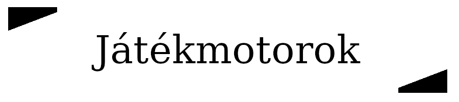
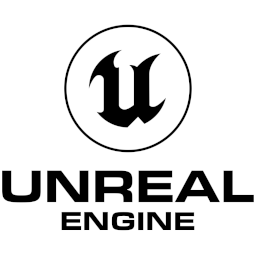
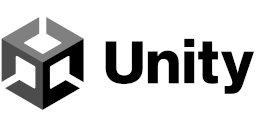
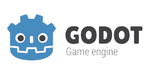

Játékmotorok
A játékmotor egy olyan szoftveres keretrendszer, amelyet elsősorban videojátékok fejlesztésére terveztek. A játékmotor az ezt a keretrendszert használó fejlesztői szoftvercsomagra is utalhat, amely jellemzően egy sor eszközt és funkciót kínál a játékok fejlesztéséhez. A "motor" terminológia a szoftveriparban használt "szoftvermotor" kifejezésből származik. Általában magában foglalja a megfelelő könyvtárakat és támogató programokat.
A játékmotorok által jellemzően biztosított alapvető funkció a rajzoló ("renderer") 2D vagy 3D grafikához, egy fizikai vagy ütközésérzékelő motor, hang, szkriptelés, animáció, mesterséges intelligencia, hálózat, streaming, memóriakezelés, szálkezelés, lokalizációs támogatás, és videó lejátszás támogatás.
Sok esetben a játékmotorok az újrafelhasználható szoftverkomponensek mellett vizuális fejlesztési eszközöket is biztosítanak, mint például pályaszerkesztő, képszerkesztő, illetve akár kódszerkesztő.
A játékfejlesztő cégek gyakran úgy takarékoskodnak a játékfejlesztés folyamatával, hogy ugyanazt a játékmotort használják újra, illetve adaptálják különböző játékok készítéséhez vagy a játékok több platformra történő átültetésének elősegítésére.
Leghíresebb játékmotorok
Unreal Engine
Az Unreal Engine az Epic Games által fejlesztett 3D-s játékmotor, amelyet először az 1998-as Unreal című első személyre lövöldözős videojátékban mutattak be. Eredetileg PC-s első személyű lövöldözős játékokhoz fejlesztették ki, de azóta számos játékműfajban használják, és más iparágak is átvették, különösen a film- és televíziós ipar. Az Unreal Engine C++ nyelven íródott, és nagyfokú hordozhatósággal rendelkezik, az asztali, mobil, konzol és virtuális valóság platformok széles skáláját támogatja.
Forráskódja a GitHubon elérhető. A kereskedelmi felhasználás jogdíjmodell alapján történik. Az Epic az 1 millió USD feletti bevétel 5%-át számítja fel, amelytől az Epic Games Store-ban közzétett játékok esetében eltekint.
A motor fejlesztéséhez a Fortnite bevételei is hozzájárultak. Epic felvásárolt cégektől származó funkciókat is beépített a motorba.
Verziók
- Unreal Engine 1 - 1991
- Unreal Engine 2 - 1998
- Unreal Engine 3 - 2004
- Unreal Engine 4 - 2005
- Unreal Engine 5 - 2020
Unity
A Unity a Unity Technologies által fejlesztett, többplatformos játékmotor.
2005-ben jelentették be, és adták ki az Apple Worldwide Developers Conference-en Mac OS X játékmotorként.
A motor azóta fokozatosan bővült, így már számos asztali, mobil, konzolos és virtuális valóság platformot is támogat.
Különösen népszerű az iOS és Android mobiljátékok fejlesztéséhez.
A kezdő fejlesztők számára könnyen kezelhetőnek tartják, és népszerű az indie játékfejlesztők körében.
A motor háromdimenziós (3D) és kétdimenziós (2D) játékok, valamint interaktív szimulációk és egyéb élmények létrehozására is használható.
A motort a videojátékokon kívüli iparágak is átvették, például a filmipar, az autóipar, az építészet, a mérnöki és építőipar.
Verziók
- Unity 2 - 2007
- Unity 3 - 2010
- Unity 4 - 2012
- Unity 5 - 2015
- Unity - 2017
Godot
A Godot egy többplatformos, ingyenes és nyílt forráskódú játékmotor, amelyet az MIT licenc alatt adtak ki.
Eredetileg Juan Linietsky és Ariel Manzur argentin szoftverfejlesztők fejlesztették több latin-amerikai cég számára, mielőtt 2014-ben nyilvánossá tették volna.
A fejlesztőkörnyezet számos platformon fut, és több más platformra is képes exportálni. Úgy tervezték, hogy 2D-s és 3D-s játékokat egyaránt lehessen vele készíteni PC-s, mobil és webes platformokat megcélozva, de nem játékszoftverek, például szerkesztőprogramok fejlesztésére is használható.
A Godot lehetővé teszi a videojáték-fejlesztők számára, hogy 3D-s és 2D-s játékokat hozzanak létre több programozási nyelven, például C++, C# és GDScript segítségével.
Verziók
| Godot 1 | 2014 |
| Godot 2 | 2016 |
| Godot 3 | 2018 |
| Godot 4 | 2023 |